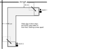
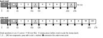
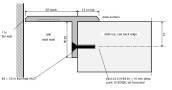
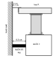

J · Wall-gap trim (optional)
!After chapter I.
The clamp pieces wrap round the VIVO clamp backs, so both clamps must already be fitted and tight. The trim goes on before the final push to the walls.
Parts: P19 wall-gap trim (corner, two 80 mm fillers, two clamp pieces, 240 mm segments, the short end pieces, connector tiles, two end caps), H07 #4 × 1/2 in flat head × 48. Tools: tape measure, drill guide with the 10 EDGE puck, 5/64 in bit, wall gauge. No figure in this chapter uses part balloons.
1
Unload the desk. Take the screens, the PC and everything loose off the desk.
2
Measure, set, print. With the desk still against both walls, measure the gap between each top's raw back edge and the wall, in mm, at five or six points along each wall. Take the smallest reading, find it in the table, and set gap in parts/accessories/wall-gap-common.scad to the value under it. Then print the trim. MEASURE ON HARDWARE
| Smallest gap (mm) | 27 | 28 | 29 | 30 | 31 | 32 | 33 | under 27 or over 33 |
|---|
| Set gap to | 26 | 27 | 28 | 29 (as saved) | 30 | 31 | 32 | measure again and ask before printing |
|---|
| Wall | From the wall corner outward: desk positions in cm, piece lengths in mm | Slotted segments (cm) |
|---|
| back | corner (to 20), 80 mm filler (20–28), clamp piece (28–52), 8 × 240 mm, 1 × 50 mm (to 249) | 3rd (100–124), 8th (220–244) |
| side | corner (to 20), 80 mm filler (20–28), clamp piece (28–52), 10 × 240 mm, 1 × 220 mm (to 314) | 3rd (100–124) |
The corner piece covers each wall's first 20 cm of desk. 24 connector tiles: 11 joints on the back wall, 13 on the side wall. Cut list from parts/README.md.
3
Pull the desk out, 40 cm from both walls. Two people, one at each ALEX unit: slide the whole desk away from both walls. The ALEX units slide on their feet and the pads stay in their rings. Nothing comes apart.

Fig. J-1 · Plan, seen from above: x grows to the right, y toward you, back wall at the top (1:40). Dashed: the desk in place, 3 cm off both walls. Grey: pulled 40 cm off both, so the raw back edges are open to work on.
4
Build each chain from the corner outward. Corner piece, 80 mm filler, clamp piece with its notch round the clamp back, then the 240 mm segments (slotted ones where the cut list says), ending with the short piece. Butt every joint and push a connector tile up into the pockets. Push an end cap into the last piece's end pocket, end wall flush with the trim's end.

Fig. J-2 · Chain order along both walls, straightened out: the wall corner on the left, desk positions in cm growing to the right, piece lengths in mm (1:20). The notch (white, in K) wraps the clamp back, 80 mm long and 17.5 mm proud VERIFIED.
Fig. J-3 · Connector tile (1.8:1, mm), one under every joint, pins up. It bridges the 20 × 12 mm pockets of two butted pieces.
Every piece, the corner included, has a pocket on its underside at each end, over the gap. Butt two pieces, then push a tile up into both pockets until its pins seat: the joint cannot step, bow or drift, and nothing shows on top. The end cap is half a tile with a 28 mm end wall: it clips into the far-end pocket of each chain and closes the gap where the raw edge would show from the side.
If a wall is out and the notch misses the clamp, change the 80 mm filler's seg and reprint it, nothing else.
5
Pilot and screw. Through each lip hole, pilot 5/64 in, 10 mm deep, drill horizontal, with the drill guide's 10 EDGE puck held against the raw edge. Drive an H07 #4 × 1/2 in flat head into each: two per segment, one per corner leg, one each side of a clamp notch.

Fig. J-4 · Trim on the raw back edge, section across the edge (1.8:1, mm), seen from the side-wall end looking along the back wall (x grows away from you): the wall on the left, the desk on the right. 12 mm rests on the surface, the 20 mm lip drops into the gap, the screw sits 14 mm below the surface: nothing shows on top and nothing goes into the top face. Profile from parts/accessories/wall-gap-common.scad SOURCE-DEFINED; top 28 mm thick MEASURE ON HARDWARE.
6
Slide the desk back. Two people again, one at each ALEX, until the wall gauge's ALEX 65 leg (6.5 cm) just fits between the wall and each ALEX. The trim's outer edge stops 1 mm short of the wall.
7
Load the desk again. Put the screens, the PC and everything else back in their chapter I positions: chapter K checks the desk with everything in place.
Retighten every screw after two weeks.
Next: chapter K, final inspection and load testing.

Fig. J-5 · Wall gauge at ALEX 1, section across the back wall, seen from the side-wall end looking along the back wall (x grows away from you): the wall on the left, the room on the right (1:3.3).